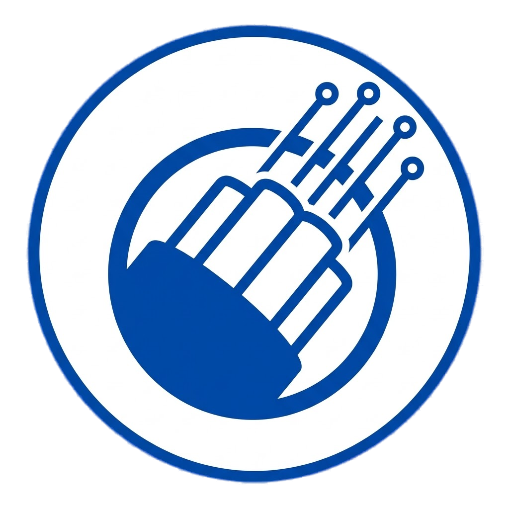

LANDriveEmpowering fast, private, and secure file sharing on local networks.
At LANDrive, we believe file sharing should be fast, private, and simple. We're building a world where local networks are the preferred way to transfer files — no cloud, no servers, no compromises.
LANDrive is designed for teams, families, and individuals who value speed and privacy above all else.
Traditional file sharing solutions rely on cloud services that slow you down, track your data, and require constant internet connectivity. We saw the problem and decided to build something better.
LANDrive leverages your existing local network infrastructure to deliver:
LANDrive is built with modern, reliable technologies:
Cross-platform desktop application framework for Windows, Mac, and Linux.
High-performance runtime for real-time server operations.
Real-time bidirectional communication for instant updates.
Lightweight web framework for the file server.
Modern UI framework for responsive web interface.
Low-latency communication protocol for real-time sync.
Your data is yours. We believe everyone deserves privacy by default, not as an option.
Speed matters. Direct local network transfers mean blazing-fast file sharing.
We're committed to transparency. LANDrive is open source and community-driven.
Yes, LANDrive is completely free and open source. We don't have hidden costs, premium tiers, or subscriptions. Download it, use it, modify it — all free.
LANDrive operates entirely on your local network. Files are transferred directly between devices without passing through any external servers. Your data never leaves your network.
No. LANDrive only needs a local network (Wi-Fi or Ethernet). Internet is not required at all. Perfect for offices, homes, and offline scenarios.
Currently, LANDrive is designed for local networks only. However, remote network support is planned for a future release with enhanced security features.
There's no hard limit — it depends on your available disk space and network capacity. You can share files from kilobytes to terabytes.
Yes! LANDrive is open source. Visit our GitHub repository to view the code, contribute, or fork the project.
Join the movement towards faster, private local file sharing.